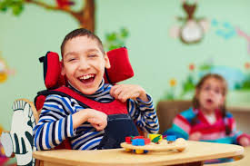
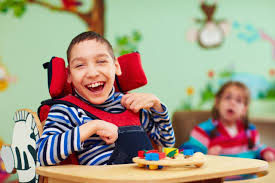
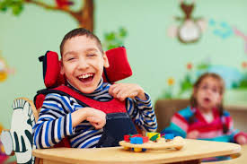
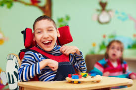

A educação especial é um direito das pessoas com deficiência, Transtornos Globais do Desenvolvimento ou superdotação.
Pessoas com deficiência (por exemplo, deficiência visual, auditiva, intelectual, física ou múltipla, em diferentes níveis e complexidade): Indivíduos com Transtornos Globais do Desenvolvimento (como autismo e Síndrome de Asperger); Pessoas com altas habilidades ou superdotação.